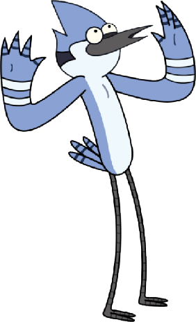

¿Quién es Mordecai?
Mordecai es un arrendajo de 23 años quién trabaja durante toda la serie en un parque desarrollando tareas de mantenimiento y limpieza junto a sus amigos.
Generalmente no usa ropa a menos que la situación lo amerite, es un poco responsable a la hora de trabajar y fuera del trabajo se muestra tranquilo o agradable , algo que le beneficia a la hora de socializar con los demás en su entorno.
Cabe destacar que en su día a día , Mordecai vive aventuras de carácter surrealista ya que generalmente son provocadas por motivos irreales, exagerados o ridículos.
